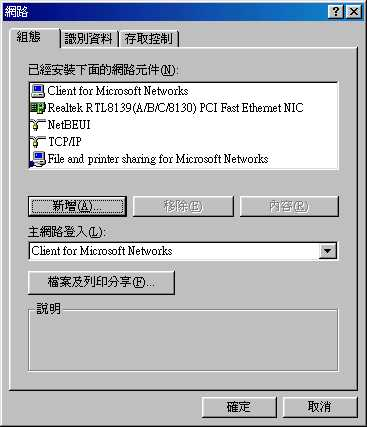
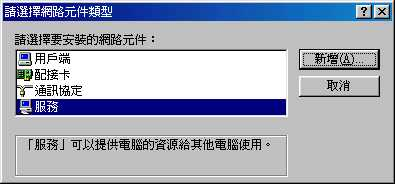
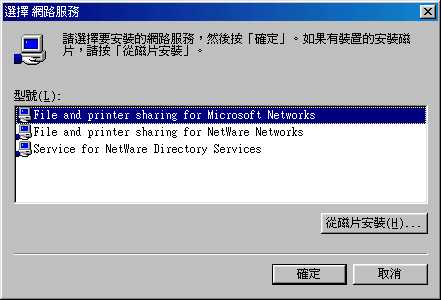
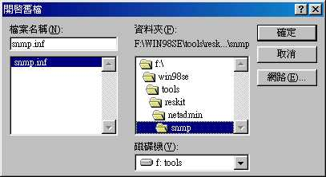
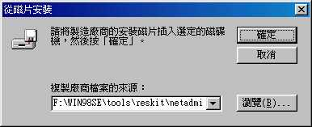
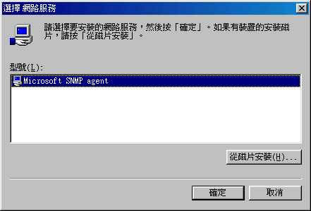
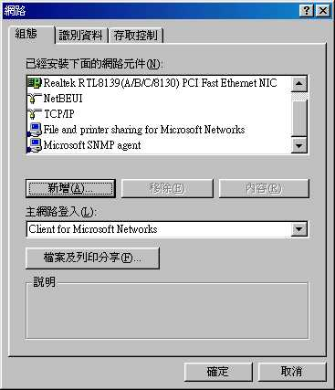

| [root @tsai /root]# cd /usr/local/src [root @tsai src]# cp /root/ucd-snmp-4.2.1.tar.gz . [root @tsai src]# tar -zxvf ucd-snmp-4.2.1.tar.gz [root @tsai src]# cd ucd-snmp-4.2.1 [root @tsai ucd-snmp-4.2.1]# ./configure --prefix=/usr/local/snmp .......（過程我就省略了） ************** Configuration Section ************** You are about to be prompted by a series of questions. Answer After the configure script finishes, you can browse the newly -Press return to continue- （這裡按 enter 吧） disabling above prompt for future runs... yes *** System Contact Information: Describes who should be contacted about the host the agent is System Contact Information (root@):root@tsai.adsldns.org （這裡輸入你的 e-mail） *** System Location: Describes the location of the system. This information is System Location (Unknown):RedHat 6.1 （這裡可以隨便輸入，不正確也沒關係） *** Logfile location: Enter the default location for the snmpd agent to dump Location to write logfile (/var/log/snmpd.log):（按 enter 即可） *** snmpd persistent storage location: Enter a directory for the snmp library to store persistent Location to write persistent information (/var/ucd-snmp):（按 enter 即可） [root @tsai ucd-snmp-4.2.1]# make |
| [root @tsai /root]# cd /usr/local/src [root @tsai src]# cp /root/mrtg-2.9.17.tar.gz . [root @tsai src]# tar -zxvf mrtg-2.9.17.tar.gz [root @tsai src]# cd mrtg-2.9.17 [root @tsai mrtg-2.9.17]# ./configure --prefix=/usr/local/mrtg-2 \ > --with-gd=/usr/include \ > --with-gd-lib=/usr/lib \ > --with-gd-inc=/usr/include \ > --with-png=/usr/include \ > --with-zlib=/usr/include [root @tsai mrtg-2.9.17]# make; make install |
| [root @tsai mrtg-2.9.17]# cd /usr/local/mrtg-2/bin [root @tsai bin]# ./cfgmaker --output=/usr/local/apache/htdocs/mrtg/net/mrtg.cfg \ > public@vbird.adsldns.org 上面這個步驟會在你的主機上面製造一個參數檔， 而你未來的設定都會自動的在這個參數檔中設定完成了！ [root @tsai bin]# vi /usr/local/apache/htdocs/mrtg/net/mrtg.cfg [root @tsai bin]# ./mrtg /usr/local/apache/htdocs/mrtg/net/mrtg.cfg [root @tsai bin]# ./indexmaker \ |
| [root @tsai bin]# vi /etc/crontab
#1. Runing The MRTG Net Flow Control |
- Target[裝置名稱]：
- Target[vbird.adsldns.org_2]: 2: public@192.168.1.2
上面是一般的用法，其中半括號內的是裝置的名稱，同一個裝置的各參數中，這個名稱要一致！
- Target[vbird.adsldns.org_3]:`/usr/local/apache/htdocs/mrtg/cpu/mrtg.cpu`
後面接的是一個自訂的加掛的可執行檔案，這個檔案執行之後，會顯示四個數據，這樣就可以繪圖了！在繪製非 MRTG 程式的預設咚咚中，這個是最常使用的方法了！
- MaxBytes[裝置名稱]：
- MaxBytes[vbird.adsldns.org_2]: 1250000
後面的數字代表資料監測時，最大的傳送速率，使用 bytes，所以 10Mbps 則為 1.25MBytes，大約是 1250000 Bytes。這個數值程式會自動判斷啦！不過你也可以自己修改，用到這個數字的時候是在你的圖表下方，每一個說明後面的(xx%)時用到的。
- MaxBytes[vbird.adsldns.org_3]: 100
如果你的資料並不是 Bytes 時，例如監測 CPU 負載率時，那這個數值就需要改變啦！
- Options[裝置名稱]：
- Options[vbird.adsldns.org_2]: growright, bits （用在網路流量中）
- Options[vbird.adsldns.org_3]: growright, nopercent, gauge （用在 CPU 負載中）
growright:將資料隨時間變化的順序以右而左繪圖；
bits:資料單位為 bits；
nopercent:在圖下方的說明文字中，不顯示百分比；
gauge:圖表的上限固定！
| [root @tsai cpu]# vi mrtg.cpu
---- 檔案開始 ---- # 2. 列出四個數據（前兩個為數字） [root @tsai cpu]# chmod 755 mrtg.cpu （設定成可執行） |
| [root @tsai cpu]# vi mrtg.cfg.cpu
---- 檔案開始 ---- Target[localhost]: `/usr/local/apache/htdocs/mrtg/cpu/mrtg.cpu` |
這樣就OK了，直接將 Web 指向 http://your.host.domain/mrtg/cpu/localhost.html
重點說完了！再來說說 sar 吧！基本上， sar 可以用來偵測很多的咚咚，例如：
- sar -u 1 5 ：每一秒鐘測一次 cpu ，共計五次後算平均；
- sar -r 3 3：每三秒看一次實體與虛擬記憶體用量，三次後算平均！
- 其他的功能有待你的發掘囉！
| [root @tsai root]# netstat -a | more Active Internet connections (including servers) Proto Recv-Q Send-Q Local Address Foreign Address State tcp 0 0 *:ftp *:* LISTEN tcp 0 0 *:telnet *:* LISTEN tcp 0 0 *:pop-2 *:* LISTEN tcp 0 0 *:pop-3 *:* LISTEN tcp 0 0 *:imap2 *:* LISTEN tcp 0 0 *:smtp *:* LISTEN tcp 0 0 *:www *:* LISTEN tcp 0 0 tsai.adsldns.org:www 211.72.119.19:58298 SYN_RECV tcp 0 0 *:mysql *:* LISTEN tcp 0 0 *:netbios-ssn *:* LISTEN tcp 0 57920 tsai.adsldns.org:www 211.75.193.100:2965 ESTABLISHED tcp 0 57920 tsai.adsldns.org:www 211.75.193.100:2966 ESTABLISHED tcp 0 57920 tsai.adsldns.org:www 211.75.193.100:2967 ESTABLISHED tcp 0 57920 tsai.adsldns.org:www 211.75.193.100:2968 ESTABLISHED tcp 0 57920 tsai.adsldns.org:www 211.75.193.100:2969 ESTABLISHED tcp 0 1 tsai.adsldns.org:www 202.98.131.11:4374 FIN_WAIT1 tcp 0 1 tsai.adsldns.org:www 202.98.131.11:4404 FIN_WAIT1 tcp 0 1 tsai.adsldns.org:www 202.98.131.11:4413 FIN_WAIT1 tcp 0 1 tsai.adsldns.org:www 202.98.131.11:4453 FIN_WAIT1 以下省略！ |
我們可以很清楚的發現：使用 netstat 可以查到 WWW 的連線數目，那只要將這些數目作一些重複性分析，以去除重複的 IP 網址後，不就可以知道以 WWW 方法上網連線的即時人數了嘛！這就是我們偵測的主要原理了！
| [root @tsai root]# vi mrtg.person.sh 檔案開始： #!/bin/bash # 這個程式主要在計算有多少人以 WWW 的方式連線進我們的主機！ # 1. 計算連線的數目 # 2. 計算連線人數： # 3. 輸出時間咚咚 |
在上面的式子中，你可以執行出你所需要的咚咚囉！你也可以將 mrtg.person.sh 這個檔案捉下去直接修改！所需要變更的就只有 最後一行的 your.host.name 要改囉！改成您的主機名稱吧！並且將這個檔案改成可以執行的狀態：
| [root @tsai root]# vi mrtg.cfg.person 檔案開始： # Created by # VBird 2001/10/29 ### Global Config Options ### CPU Loading detecting ... |
要注意的僅是 `/usr/local/mrtg-2/bin/mrtg.person.sh` 這一行字！這個就是我們剛剛才寫成的 scripts 啦！然後同樣的，執行

| [root@vbird mrtg]# /usr/local/mrtg-2/bin/cfgmaker public@192.168.1.11 > mrtg.cfg.vbird |
注意囉！ public 是預設的指令，後面接的是你的 IP （當然也可以是 domain 說）。這樣一來，就可以做出一個參數檔案，名稱為 mrtg.cfg.vbird，我們來看一看這個檔案的大概內容吧！
| [root@vbird mrtg]# vi mrtg.cfg.vbird # Created by # /usr/local/mrtg-2/bin/cfgmaker public@192.168.1.11 ### Global Config Options WorkDir: /usr/local/apache/htdocs/mrtg/ Options[_]: growright, bits Target[192.168.1.11_16777219]: 16777219:public@192.168.1.11: |
MRTG 流量偵測到此為止介紹的都是屬於 NT 或者是 Linux 上面的訊息，那要如何偵測 Windows 98 的系統呢？畢竟使用這個系統的用戶並不少呀！OK！偵測 Windows 系統，最主要的就是要有 snmp 啦！只要有 snmp 之後，往後的工作就都完全一模一樣了！哪我們就在 Windows98 上面安裝 snmp 的服務吧！其實， snmp 套件已經在 windows 98 的原版光碟中了，你可以到原版 98 光碟的 /tools/reskit/netadmin/snmp 這個路徑下找到以下僅提供 snmp 在 windows98 下的安裝方法，至於偵測的方法則與 Windows 2000 的情況一模一樣！目前我已經在 Linux 上以 MRTG 成功的將研究室所有的電腦之網路卡流量偵測了！往後將可便利於管理整個研究室的網路流量，並可以藉以分析是否有不明人士亂玩網路.....
- 你可以在 windows 98 下按下『開始』>『控制台』>『網路』，或者是在桌面的『網路上的芳鄰』按『右鍵』選『內容』，會出現如下方框：
- 請按下『新增』之後，出現：
- 選擇『服務』的項目後，並按下『新增』：
- 然後再選擇『從磁片安裝』這一項！並將你的 snmp 套件指向你的原版 windows 98 光碟！
- 按下確定之後，再按一次確定！即可安裝 snmp 套件囉！
- 就像這樣，出現了這個東西！按下確定吧！開始安裝囉！
- 有沒有看到如下圖所示！ Microsoft SNMP agent 已經出現了！表示安裝完畢！

在寫出這一篇文章之後，收到網友們的熱情支持！讓小弟不甚惶恐！不過，這裡面也出現了一些問題是當初所沒有發現的！以下就來說說問題的所在吧！
- 我的 Red Hat 本身就有 snmp 了，可不可以不要安裝 ucd-snmp 這個套件呢？
當然了，Red Hat 本身就有 snmp 這個通訊服務存在了，可能的話當然就不要去動他比較好囉！不過，要讓你的 Red Hat 預設的 snmp 能動，那就一定需要修改 /etc/snmp/snmpd.conf 這個檔案！不過，小弟對於 snmpd.conf 的設定還不是很瞭解！因此，就會直接建議您，乾脆移除預設的 ucd-snmp 之後，重新安裝新版的吧！設定上比較簡單啦！當然，如果您英文不錯的話， /etc/snmp/snmpd.conf 這個檔案可要多看一些喔！
- 為何作完了 ./cfgmaker 這個動作之後，再執行 ./mrtg 時，會出現：『ERROR: Line 9 』的問題？
這個是大家最容易犯的錯了，其實，就是在 public@your.hosts.name 這一個地方寫錯了！請千萬注意， public 是有意義的代碼，請不要將這一行寫成你的 e-mail 了！不然就會造成錯誤情況發生！